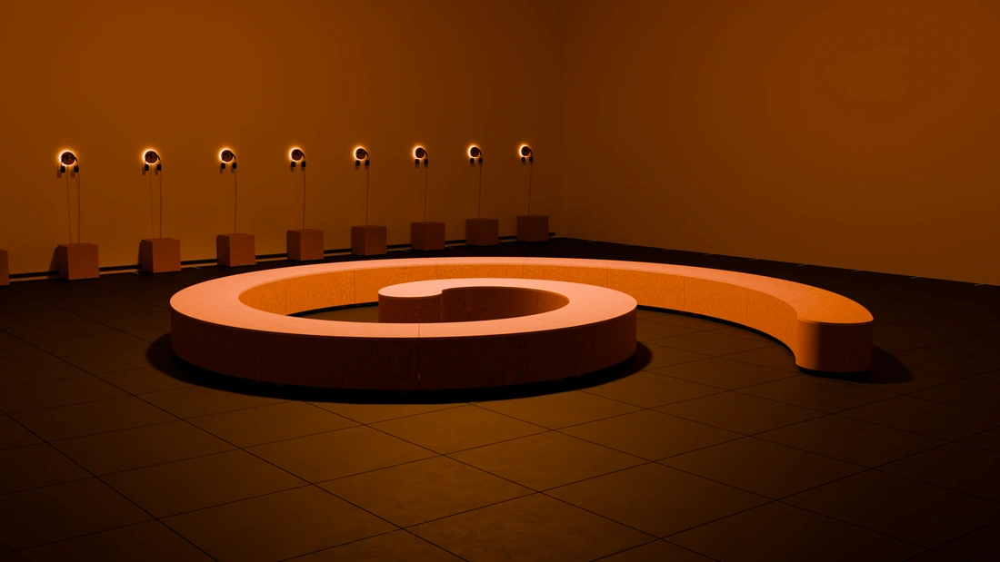

CORAL-ES
Caminar por el espacio · recorrido 3D
Abriendo el modelo de la instalación…
El modelo no pudo abrirse.
Guardar la panorámica completa
Ubicación
Centro
Entrada
Lateral
Estaciones
Controlar mirada
Sentarse (E)
Volver al punto
Ayuda
Pantalla completa
↑
←
↓
→